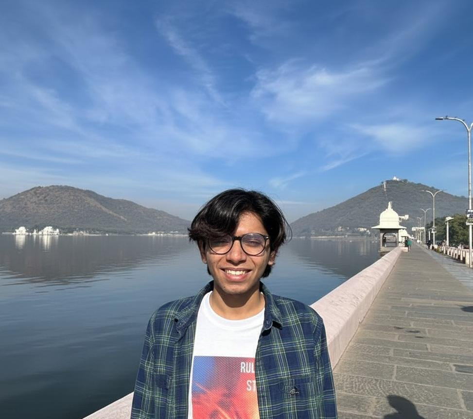

BTech - Computer Science & Artificial Intelligence
2026Plaksha University, Mohali
CGPA: 9.23/10

I am a final year engineering student, interested in AI. I have worked a lot with deep learning models as part of several courses and projects, and am intent on investigating their architecture, associated capabilities and limitations. I approach technology with a mistrustful, incredulous nature and am insistent on uncovering its foundations and interactions from a philosophical perspective, backed by technical expertise.
I've also been reading up a lot on GPUs recently. would love to play around with CUDA & nsys please hook me up with a rig!
I'm also horribly lazy at updating the page, please feel free to reach out for anything.
Plaksha University, Mohali
CGPA: 9.23/10
Prof. Pankaj Pansari
Prof. Pankaj Pansari, Prof. Deepan Muthirayan
Plaksha University
January 2025 - Present
Training reinforcement learning models on the game "Baba is You" using DQN, PPO, and Hierarchical RL approaches.
August 2024 - December 2024
Engineered novel generative models for music style transfer using CycleGANs and Variational Autoencoders.
January 2024 - May 2024
Developed CNN-RNN model for prediction of binding affinity values for drug-target interactions.
C++, Python, C, CUDA, R, MATLAB
PyTorch, TensorFlow, JAX, CUDA, SQL, AWS